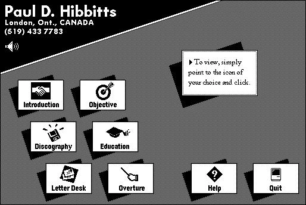
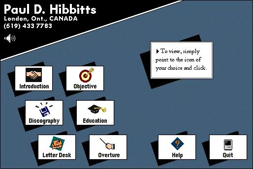
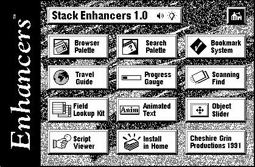
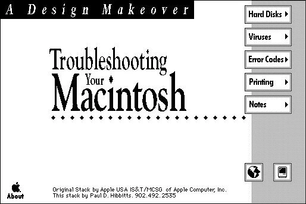
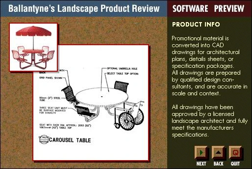
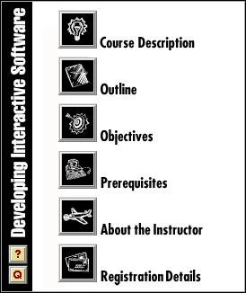
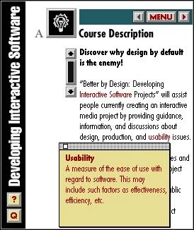

Design Origins
A small collection of screenshots from Paul's first few years (1990–1994) of Macintosh interactive media development and design.
Before Markdown and the Web, even before the term UX, there was HyperCard and SuperCard – early tools for building interactive, card-based media on the Macintosh. These early projects, built primarily during Paul's time in Ontario and Vancouver in the early to mid 1990s, mark the start of a career path that eventually led to teaching, consulting, and the open education and publishing projects on this site.
Screenshots below are shown at their original size – early Macintosh displays measured 512×342 pixels and up, much smaller than today's screens.







Over thirty years on, that same love for design and instinct – make something complicated feel simple – still shapes the open-source tools on this site. See Paul's more recent work in About Paul.